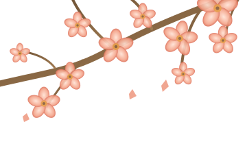
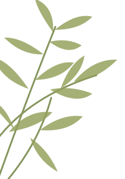

Travelogue / Watercolor Map
Airport detail preservation · Interactive browser sandbox
Worldwide watercolor, without losing map features
Illustrative airport test scene · Zoom 14


Airport feature inspectionRunways · Taxiways · Terminal · Rail · Roads · Parks · POIs
Watercolor overlay / Zoom 14Drag to pan · Zoom to inspect runway markings · Switch map styles
Offline browser preview, not a live Google Maps screenshot. This scene uses representative airport geometry to demonstrate the actual overlay logic from src/lib/watercolorMap.js. Live map tiles and the full React app require network access, dependencies, and a Google Maps API key.